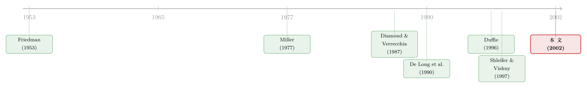

做空之前，你得先借到那张股票
本文读的是 D'Avolio (2002, Journal of Financial Economics)：作者用一家大型机构借贷中介 18 个月的私有数据，第一次把「卖空约束」从一个抽象的「交易成本」还原成一个有供给、有需求、会出清的借券市场。核心结论是——平均而言借券既便宜又容易（市值加权成本只有 25 个基点，七年级也能借到九成股票），但只要投资者之间的分歧够大，借券费率与「召回」风险就会系统性地飙升；到了某个临界点，乐观情绪本身就能把套利的门给关上。
1 一个被理论悄悄绕过去的动作
金融理论里有一个动作，几乎所有人都假设它是免费的：做空。
Friedman (1953)、Fama (1965, 1970)、Ross (1976) 这一脉经典文献都默认，理性套利者可以无成本地借到、并卖空任意数量的股票。这个假设很关键——因为做空本质上是套利者「凭空造出来的新供给」，是他们用来对抗市场上那些过度亢奋、却又向下倾斜的需求曲线的唯一武器。如果做空真的免费且无限，那么任何高估都会被瞬间抹平，价格永远是对的。
但每一个真正下过空单的人都知道，事情没这么简单。SEC 对卖空的定义里藏着一句要命的话：要把股票交割给买家，卖空者必须先去借到这只股票——通常是从券商或某个机构投资者手里借。
于是一个朴素却被理论长期绕开的问题浮出水面：这张要被借出去的股票，它的市场长什么样？借它要花多少钱？借得到借不到？借了之后会不会被人中途要回去？
D'Avolio 这篇 2002 年的论文，干的就是这件「脏活」——它不证一个漂亮的定理，而是把美国股票借贷市场（the market for borrowing stock）这台机器拆开，一个齿轮一个齿轮地讲给你看。而当这台机器被讲清楚之后，一个意外的理论收获自己冒了出来。
2 借券到底是怎么一回事
先把交易机制讲清楚，否则后面的费率和风险都是空中楼阁。
假设套利者 A 想做空一股「克里斯比甜甜圈」(Krispy Kreme, KKD)。她必须先找到一个持有 KKD、且愿意且能够把股票借出来的现有股东 B。谈妥之后（行话叫「located」），A 才能把借来的这股卖给任意买家 C。这笔前置的借券交易有几个要害：
- A 要向 B 抵押 102% 的市值（每日盯市结算）。据风险管理协会 (Risk Management Association) 的数据，美国
98%的股票借贷用现金做抵押，剩下2%用国债。 - A 要向 B 付一笔费用。对现金抵押的借贷，这笔费用藏在「返息率」(rebate rate) 里——也就是 B 为占用 A 的现金抵押而付给 A 的利息。打个比方：若市场资金利率是
5%、股票借贷费是1.50%，那 B 只返给 A3.50%。注意，借贷费不以资金利率为上限——返息率可以变成负的。若 A、B 谈定返息率为−45%，那 A 实际上等于向 B 付了50%的借贷费（直接付 45% + 牺牲掉的 5% 利息）。 - B 随时有权召回 (recall) 股票。这不是 B 心血来潮，而是法律强制：若 B 是养老金，这是 ERISA 的明文要求；若 B 是共同基金，则受《1940 年投资公司法》约束；从税务上看，IRS Section 1058 也要求保留召回条款，否则借贷会被当成「卖出」征税。所以几乎所有机构借贷都是「open」的、每晚滚动续作。一旦 B 通知召回，A 有三天把股票还回去，否则第五天 B 可以动用抵押品到公开市场上「买入」(buy-in)。
行话把高费率（低返息）的股票叫 special（特殊券），把基准费率（约 15 个基点）的股票叫 general collateral（一般抵押券，GC）。这两个名字本身就泄露了市场的本质：A 借给 B 现金，B 拿股票做抵押；如果 B 能随便拿任何股票来顶这笔抵押，那 A 拿到的就是「一般抵押」；如果 A 非要 B specifically 押上 KKD 这只股票，那 A 拿到的就是「特殊抵押」——并且愿意为此在现金利率上让利。
把方向理清：A（卖空者）想要的是 KKD 这只特定的股票，B（出借人）想要的是现金。所谓「借贷费」，是 A 为了拿到这只特定股票，在现金利率上做出的让步。一只券越「special」，说明想做空它的人越多、肯出借它的人相对越少。
谁是出借方？美国市场最大的出借人是大托管行（如纽约银行、道富银行），它们作为代理，替养老金、共同基金、捐赠基金这些大机构出借——其中被动指数基金参与得最积极。谁是借入方？做市商、期权/期指/可转债的对冲者、做风险套利和统计配对交易的对冲基金……一个庞杂的群体。
3 反转：为什么「special」居然能持续存在
讲清机制之后，一个自然的问题是——special 凭什么能存在？
这个问题比看上去刁钻。想象一只券的借贷费是正的（比如年化 5%）。如果所有持有人在制度上、法律上都能参与出借，那么「手里攥着股票却不出借、白白放弃这 5% 收益」就违背了最优化与均衡。换句话说，正的借贷费应该被竞相出借的供给压回到零才对。
所以 special 要想持续，必须存在一个出借市场参与约束（或者搜寻摩擦）：得有一批人不能或不愿出借，并且心甘情愿地把整个流通盘（float）扛在手里。现实中这样的人确实存在——零售券商只能出借保户保证金账户里的股票，大量散户根本进不了出借这扇门。
但故事到这里还有一个漏洞：就算这批人不能出借，他们为什么不去买衍生品替代品（远期、期货、期权的「合成」头寸）？因为这些衍生品为了排除简单的「持有套利」，定价时会相对现货折让一块——折让的幅度恰好等于预期的借券成本。也就是说，能用衍生品的人，会发现合成头寸比直接买现货更划算，于是从「非出借的现货持有者」这个池子里抽身离场。这个池子被抽干到一定程度，special 均衡就会瓦解。（关于期权上市如何松动卖空约束，可参见《同一份现金流，两个价格：当「借不到的券」撑开了期权与股票的裂缝》。）
于是，真正关键的一步来了：在一个可持续的 special 均衡里，那批进不了借贷和衍生品市场的、被约束的投资者，必须独自扛下全部流通盘；而由他们设定的现货价格，必须高到足以让卖空需求在零费率下超过出借供给。special 的根，是边际投资者（乐观的多头）与卖空者之间的分歧。
这就接上了 Miller (1977) 那个著名的命题：当存在卖空约束、且投资者意见分歧时，价格会偏向乐观——因为悲观者被挡在门外，边际定价者是个乐天派。过去人们把「卖空约束」当成一个外生的假设塞进 Miller 的模型。而 D'Avolio 的洞见是反过来的：分歧本身可以内生地制造出卖空约束。分歧越大 → 想做空的人越多、借券需求越旺 → 借贷费越高、special 越普遍 → 卖空越受限 → Miller 的乐观价格越成立。这是一个自我强化的环。（这条「分歧 + 卖空约束 → 崩盘不对称」的逻辑，另一篇做得很透，见《市场为什么只会「崩」，不会「暴涨」？——一个关于沉默者的故事》。）
4 一个非正式均衡：special 的门槛
论文的正式模型放在了早期工作稿里，正文只给了一个非正式的供需框架。但它的比较静态结论很清楚，值得显式写下来。
special 这个「costly + constrained」的状态，要等到非出借者的估值偏差超过某个门槛时才会出现。作者明确指出：这个门槛随流通盘规模上升、随出借人的乐观偏差上升，随非出借者的相对风险承担能力下降。我们可以把它写成一个示意性的比较静态关系（注意，这是对论文文字所述符号关系的概括，不是论文给出的显式方程）：
直觉是这样的：要把一只券推进 special，需要「非出借的乐观者独自撑起全部流通盘、并把价格抬到引出过量卖空需求」这件事真的发生。盘子越大（F↑）、其他人越扛得住风险（R↑ 实际指非出借者，符号见上）、出借供给越充足（b_L↑），这件事就越难发生，门槛 \bar b 就越高。一旦越过门槛，股价就完全由这批受约束的投资者的偏差决定——与理性卖空者的风险承受能力无关。这正是 Miller 的乐观价格，只不过现在卖空约束是内生长出来的。
由此，论文给出两条可检验的假说：
- H1：变成 special 的概率，随非出借者与卖空者之间的分歧上升。
- H2：变成 special 的概率，随流通盘规模下降。
5 召回风险：被理论低估的那一半
如果说 special 讲的是「费率水平」，那召回讲的是「费率的方差」——这是论文里我个人觉得最被低估的一块。
在多期世界里，卖空者怕的不只是费率高，更怕费率会变、甚至借不到。因为监管规定出借人随时可召回，几乎没有机构能提供「有保障的定期借贷」(guaranteed term loan)。当出借人对股票的估值相对边际投资者下滑时，他会召回股票去卖给更乐观的人，或者按新的均衡费率重新出借。被召回的卖空者只有两条路：要么买回平仓 (cover)，要么以更高的费率重新建立空头。无论哪条，当边际投资者与边际出借人的估值之差拉大时，他的预期利润都被吞掉。这把 De Long et al. (1990) 那个抽象的「噪声交易者风险」(noise trader risk) 落到了实处。
现实中召回比理论更狼狈，因为供给冲击会让借贷市场短暂脱离均衡：一是市场惯例是出借人不对存量贷款重新定价——收到坏消息的出借人通常直接召回卖出，而不是重新谈费率；二是短期供给基本是垂直的（基金内部「组合配置」与「出借」两套人马是分开的，借贷费率也缺乏高频透明度，没有报价屏给潜在新出借人盯）。这种迟滞，正好解释了为什么职业卖空者总抱怨「召回之后再也借不回来，多少钱都借不到」。
最坏的情形是逼空 (squeeze)：越来越乐观的投资者和被召回的卖空者一起抢着买出借人正在卖的股票，把价格越推越高。这是 Shleifer and Vishny (1997)「套利的极限」的又一个渠道。一个推论是：被动指数基金是更安全的出借人——他们往往因为申购赎回（资金外流通常与股价下跌正相关）才召回，也就是在「已经下跌」的市场里召回，反而让卖空者相对好过。
6 数据告诉我们什么
讲了这么多机制和理论，真正的分量在数据上。D'Avolio 拿到的是一家大型金融机构 2000 年 4 月到 2001 年 9 月、共 18 个月的私有数据，涵盖出借供给、费率变动、以及召回的发生与性质。
先看「平均而言，市场松得很」这一面：
- 总量上极易借入。截至 2001 年 6 月，NYSE/NASD/AMEX 报告的卖空余额市值超过
$260十亿，约占总市值的1.7%；而行业调查显示美国股票借贷产能的利用率只有7%，倒推出总出借供给约$3.7万亿，约为美国市值的四分之一。样本里，市值加权的借券成本只有年化25个基点，只有7%的供给（按市值）被借走。 - 绝大多数股票都能借到。CRSP 月度文件里
7,879只股票中，最多16%（1,267只）可能根本无法做空——但这些券加起来不到市场市值的1%（其中1,093只在最小市值十分位，719只股价低于$5）。另有约10%（813只）即便能借也从没被借过，都是又小又不流动的票，合计也不到美国市值的1%。
再看「但分歧一来，门就关上」这另一面——这才是论文的核心：
91%被借出的股票，年化借贷费低于1%，这些 GC 券的市值加权平均费率是17个基点；标普 500 成份股因为被指数基金大量供给，几乎永远是 GC。- 只有
9%的股票（每天约206只）费率高于1%——这些 special 的平均费率高达年化4.3%。 - 不到
1%的股票（每月约7只）变成「极端 special」，返息率为负——也就是借贷费超过了无风险利率。克里斯比甜甜圈和 Palm 公司就是例子，借贷费一度高达50%和35%。 - 变成 special 的概率随规模与机构持股下降；而几个分歧的代理变量——高换手率、分析师预测分歧大、留言板活跃度上升、低现金流——都能预测 special。这正是 H1 与 H2 的直接验证。
最后是召回那一面：
- 召回很罕见。平均每月只有
2%（61只）在借的股票被召回。 - 但一旦被召回，重新与出借人建立空头的平均（中位数）耗时是
23（9）个交易日——一笔短期的看法，硬被拖成了一个多月的等待。 - 被迫平仓的那些日子，交易量异常放大（超过该股样本均值的两倍）、日内波动加剧。
- 一个反直觉但重要的发现：被迫平仓期间的收益低于平均——这说明这段样本里并没有普遍的逼空，卖空者反而是在下跌的价格上把股票买回来的。
把这两面拼起来，论文的图景就完整了：卖空约束在「平均」上小到几乎可以忽略，但它系统性地集中在分歧最大、机构持股最低的那些股票上。它不是一个均匀分布的小摩擦，而是一个在特定状态下突然咬人的非线性约束。
7 文献脉络
把这篇论文放回它所处的坐标里，脉络其实很清楚。
一端是「无摩擦套利」的经典传统：Friedman (1953)、Fama (1965, 1970)、Ross (1976) 都建立在「套利者能无成本做空」之上。另一端，是一批盯着「约束」与「套利极限」的文献：Miller (1977) 指出卖空受限 + 分歧 → 乐观价格；Diamond and Verrecchia (1987) 研究卖空约束下私有信息如何缓慢进入价格；De Long et al. (1990) 给出噪声交易者风险；Shleifer and Vishny (1997) 系统论述套利的极限。

与此同时，借贷/回购市场本身的均衡建模也在推进：Duffie (1996) 推导了「special 回购利率」，Duffie, Garleanu and Pedersen (2002) 用多期搜寻模型刻画借券市场——这些模型的共同元素都是投资者异质性，正是它产生了卖空需求、也解释了为何非出借者甘愿持有那些已经把出借收益打进价格的股票。
D'Avolio 这篇的位置很特别：它不是又一个模型，而是第一批用真实借券费率数据去直接测量卖空约束的实证之一。同期还有 Reed (2001)（special 股票的收益更负偏）、Geczy, Musto and Reed (2002)（IPO、风险套利、因子组合的借券成本）、Ofek and Richardson (2001)（互联网股票借贷费高 1%）、Jones and Lamont (2002)（用 1926–1933 的「loan crowd」数据证明难借的股票后续收益低）。D'Avolio 的事实与它们彼此印证，但重心是互补的——它把笔墨放在非费率的数据上：出借供给的构成、供给冲击与召回的性质。这一点，也和后来研究证券借贷信息含量的工作遥相呼应（如《把信息卖给你的对手：证券借贷里那场无声的博弈》）。
8 评论与延伸（Q&A + 研究方向）
(a) 几个可能的疑问
Q：借券平均成本只有 25 个基点，那卖空约束是不是其实无关紧要？
不能这么读。论文反复强调的恰恰是分布而非均值：均值被标普 500 这类海量供给的 GC 券压得很低，但
9%的 special 平均费率是4.3%，极端 special 能到50%。卖空约束是个高度偏态、状态依赖的东西——它在你最想做空（分歧最大、最可能高估）的那些票上最咬人。用均值否定它，等于用全市场平均水位否认局部会决堤。
Q：special 和「难借/借不到」是一回事吗？
不是，论文把它们分得很清。「借不到」是供给侧的极端（约 16% 的小票，几乎无人可借），而 special 是有供给、但出清费率很高——是供需在正费率上达成的均衡。一只大盘股可以随时借到，却仍然因为卖空需求旺盛而变 special；一只微型股可能压根没人能借，但也从没人想做空它。前者关乎价格，后者关乎可得性。
Q：「分歧内生地制造卖空约束」这个说法，比 Miller (1977) 多了什么？
Miller 把卖空约束当外生假设塞进去，再得出乐观价格。D'Avolio 的供需框架说明：分歧本身（推高借券需求）就能把费率顶上去、把 special 造出来。也就是说，约束不是天上掉下来的参数，而是分歧的均衡产物。这让 Miller 模型的适用范围从「假设有约束的票」扩展到「凡是分歧大的票」。
Q：既然召回这么折磨人，为什么卖空者不去签「定期借贷」锁死期限？
因为监管基本堵死了这条路。ERISA、《1940 年投资公司法》、IRS Section 1058 都要求出借人保留随时召回的权利，否则要么违规、要么借贷被当成「卖出」征税。所以市场上几乎没有有保障的定期借贷，召回风险是结构性的、无法通过合约绕开的——只有一个真正的定期借贷市场才能消除这种价格风险。
Q：这段样本里「被迫平仓收益更低」，是不是说逼空根本不存在？
只能说这段样本（2000–2001）里没有普遍的逼空：卖空者是在下跌中买回的，opportunity cost 有，但没被「轧」出额外亏损。论文也解释了为什么——被动指数基金是主要出借人，它们往往在资金外流（与股价下跌正相关）时召回，这天然降低了逼空风险。换个出借人结构、换个市场环境（比如散户出借占比高、或者强势上涨市），结论未必成立。
Q：这些借券费率，足以解释那些收益异象或「不愿做空」之谜吗？
论文很诚实：平均的费率和风险水平不足以完全解释收益异象或卖空的稀缺。它的价值不在「一锤定音」，而在于提供了一个可以强化模型假设、解释实证现象的微观机制——比如可以用它来支撑 Chen et al. (2002) 那种「机构持股广度下降 → 乐观价格」的设定。
(b) 几个可能的研究问题与提案
-
把这套框架搬到公司债/信用市场。 【经济故事】公司债的卖空和借贷比股票更不透明、流通盘更分散、机构集中度更高。如果「分歧内生卖空约束」在股票上成立，那么在信用市场——尤其是高收益债——分歧（评级分歧、CDS-债基差异）是否同样系统性地推高借券成本与召回风险？这直接关系到信用市场套利的有效性。 【可行性】中。需要债券借贷费率数据（如 Markit Securities Finance / DataLend），识别上可借用 D'Avolio 的横截面回归框架，用评级分歧、换手率做分歧代理。数据可得性是主要瓶颈。
-
外资持有人作为「出借人结构」的天然实验。 【经济故事】论文指出出借人的类型（被动指数 vs. 主动）决定召回与逼空风险。不同国家、不同股票的外资持股比例差异很大，而外资在借贷计划中的参与度往往系统性不同。外资进出是否会改变一只券的借券供给弹性与 special 频率？ 【可行性】中。需要把分国别的外资持股（如 FactSet/EPFR）与借券数据匹配，识别上可用指数纳入（如 MSCI 调整）作为外生的外资持股冲击做 DiD。
-
召回事件作为「供给冲击」的事件研究。 【经济故事】论文描述召回日伴随异常成交量与日内波动，但样本小（每月约 7 只极端 special、61 只召回）。能否用更大、更新的借贷数据，把召回当成一次干净的负向供给冲击，估计它对价格、波动、价差的因果影响？ 【可行性】高。现代借贷数据有日频召回/利用率信息，事件研究方法成熟，主要挑战是把「召回」与「同期坏消息」分离——可用被动基金因资金外流导致的召回作为相对外生的工具。
-
「special 溢价」的可交易性检验。 【经济故事】如果 special 状态预示着高估，那么一个「做空 special、做多 GC」的策略扣除借券费后还能不能赚钱？Geczy et al. (2002) 在 IPO/glamour 上做过类似尝试并发现费用吃掉了利润，但全市场、长样本的结论未必相同。 【可行性】高。需要长时段借贷费率面板，方法是标准的因子组合 + 真实借券成本扣减——关键是诚实地把时变借贷费和召回风险算进交易成本，而不是用事后费率。
9 我的判断
这篇论文的贡献，不在于某个惊人的系数，而在于它改变了我们谈论卖空约束的语言。在它之前，卖空约束在模型里是一个外生的、笼统的「交易成本」；在它之后，它成了一个有供给曲线、有需求曲线、会因分歧而出清在不同价格上的市场。把「分歧能内生地制造卖空约束」这件事讲透，是它最持久的理论遗产——它让 Miller (1977) 从一个需要外生假设的特例，变成了一个由分歧驱动的普遍机制。同时，它对召回风险与出借人结构的刻画，至今仍是理解「为什么有些股票的空头更脆弱」的起点。
对识别，我有两点保留。其一是样本的特殊性：18 个月、单一中介、且恰好覆盖互联网泡沫破裂这段极端时期（2000–2001）。「被迫平仓收益更低、没有普遍逼空」这个结论，很可能是这段单边下跌行情的产物，外推到牛市要非常小心。其二是代理变量的内生性：用换手率、分析师分歧、留言板活跃度去代理「分歧」，但这些变量同时也代理着流动性、关注度、甚至操纵——special 与它们的相关，未必干净地来自分歧渠道。
后续我最想看到的，是把这套供需框架放进更长、更新、更多市场的借贷数据里重做一遍：特别是公司债与新兴市场，看看「分歧 → 借券成本 → 内生卖空约束」这条链在出借人结构和监管环境都不同的地方，是不是依然成立。如果成立，那它就不只是关于股票的一个事实，而是一条关于套利极限的普遍规律。
参考文献
- D'Avolio, G. (2002). The market for borrowing stock. Journal of Financial Economics 66(2–3), 271–306.
- Chen, J., Hong, H., Stein, J. (2002). Breadth of ownership and stock returns. Journal of Financial Economics 66(2–3), 171–205.
- De Long, B., Shleifer, A., Summers, L., Waldmann, R. (1990). Noise trader risk in financial markets. Journal of Political Economy 98(4), 703–738.
- Diamond, D., Verrecchia, R. (1987). Constraints on short-selling and asset price adjustment to private information. Journal of Financial Economics 18(2), 277–311.
- Duffie, D. (1996). Special repo rates. Journal of Finance 51(2), 493–526.
- Duffie, D., Garleanu, N., Pedersen, L.H. (2002). Securities lending, shorting, and pricing. Journal of Financial Economics 66(2–3), 307–339.
- Fama, E. (1970). Efficient capital markets: a review of theory and empirical work. Journal of Finance 25(2), 383–417.
- Geczy, C., Musto, D., Reed, A. (2002). Stocks are special too: an analysis of the equity lending market. Journal of Financial Economics 66(2–3), 241–269.
- Jones, C., Lamont, O. (2002). Short sales constraints and stock returns. Journal of Financial Economics 66(2–3), 207–239.
- Miller, E. (1977). Risk, uncertainty, and divergence of opinion. Journal of Finance 32(4), 1151–1168.
- Reed, A. (2001). Costly short-selling and stock price adjustment to earnings announcements. Unpublished working paper, Wharton School, University of Pennsylvania.
- Ross, S. (1976). The arbitrage theory of capital asset pricing. Journal of Economic Theory 13(3), 341–360.
- Shleifer, A., Vishny, R. (1997). The limits of arbitrage. Journal of Finance 53(1), 35–55.